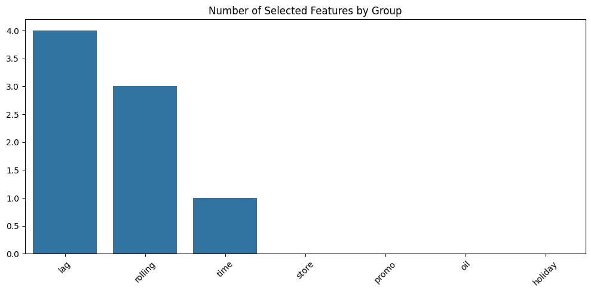

Store Sales - Time Series Forecasting#
Initial Setup and Imports
# Data manipulation and analysis
import pandas as pd
import numpy as np
from datetime import datetime, timedelta
# Visualization
import matplotlib.pyplot as plt
import seaborn as sns
# Time series specific
from statsmodels.tsa.seasonal import seasonal_decompose
from prophet import Prophet
# Machine learning
from sklearn.metrics import mean_squared_error, mean_absolute_error
from sklearn.model_selection import TimeSeriesSplit
from sklearn.feature_selection import SelectKBest, f_regression
# Train model (example using XGBoost)
import xgboost as xgb
/Users/saraliu/Library/Caches/pypoetry/virtualenvs/titanic-SA5bcgBn-py3.9/lib/python3.9/site-packages/tqdm/auto.py:21: TqdmWarning: IProgress not found. Please update jupyter and ipywidgets. See https://ipywidgets.readthedocs.io/en/stable/user_install.html
from .autonotebook import tqdm as notebook_tqdm
Data Loading and Exploration
# Load all datasets
train = pd.read_csv('./data/train.csv')
test = pd.read_csv('./data/test.csv')
stores = pd.read_csv('./data/stores.csv')
stores.rename(columns={'type': 'store_type'}, inplace=True)
oil = pd.read_csv('./data/oil.csv')
holidays = pd.read_csv('./data/holidays_events.csv')
holidays.rename(columns={'type': 'holiday_type'}, inplace=True)
transactions = pd.read_csv('./data/transactions.csv')
# add the dataset column to the train and test dataframes
train['dataset'] = 'train'
test['dataset'] = 'test'
# concatenate the train and test dataframes to simplify preprocessing and ensure consistent feature engineering
df = pd.concat([train, test], axis=0).reset_index(drop=True)
# Convert date columns
df['date'] = pd.to_datetime(df['date'])
oil['date'] = pd.to_datetime(oil['date'])
holidays['date'] = pd.to_datetime(holidays['date'])
transactions['date'] = pd.to_datetime(transactions['date'])
# Basic information and statistics
print(df.info())
print(df.describe())
# Check for missing values
print(df.isnull().sum())
<class 'pandas.core.frame.DataFrame'>
RangeIndex: 3029400 entries, 0 to 3029399
Data columns (total 7 columns):
# Column Dtype
--- ------ -----
0 id int64
1 date datetime64[ns]
2 store_nbr int64
3 family object
4 sales float64
5 onpromotion int64
6 dataset object
dtypes: datetime64[ns](1), float64(1), int64(3), object(2)
memory usage: 161.8+ MB
None
id date store_nbr \
count 3.029400e+06 3029400 3.029400e+06
mean 1.514700e+06 2015-05-02 08:56:11.294118144 2.750000e+01
min 0.000000e+00 2013-01-01 00:00:00 1.000000e+00
25% 7.573498e+05 2014-03-02 18:00:00 1.400000e+01
50% 1.514700e+06 2015-05-02 12:00:00 2.750000e+01
75% 2.272049e+06 2016-07-01 06:00:00 4.100000e+01
max 3.029399e+06 2017-08-31 00:00:00 5.400000e+01
std 8.745126e+05 NaN 1.558579e+01
sales onpromotion
count 3.000888e+06 3.029400e+06
mean 3.577757e+02 2.643830e+00
min 0.000000e+00 0.000000e+00
25% 0.000000e+00 0.000000e+00
50% 1.100000e+01 0.000000e+00
75% 1.958473e+02 0.000000e+00
max 1.247170e+05 7.410000e+02
std 1.101998e+03 1.233287e+01
id 0
date 0
store_nbr 0
family 0
sales 28512
onpromotion 0
dataset 0
dtype: int64
test.head()
| id | date | store_nbr | family | onpromotion | dataset | |
|---|---|---|---|---|---|---|
| 0 | 3000888 | 2017-08-16 | 1 | AUTOMOTIVE | 0 | test |
| 1 | 3000889 | 2017-08-16 | 1 | BABY CARE | 0 | test |
| 2 | 3000890 | 2017-08-16 | 1 | BEAUTY | 2 | test |
| 3 | 3000891 | 2017-08-16 | 1 | BEVERAGES | 20 | test |
| 4 | 3000892 | 2017-08-16 | 1 | BOOKS | 0 | test |
test.tail()
| id | date | store_nbr | family | onpromotion | dataset | |
|---|---|---|---|---|---|---|
| 28507 | 3029395 | 2017-08-31 | 9 | POULTRY | 1 | test |
| 28508 | 3029396 | 2017-08-31 | 9 | PREPARED FOODS | 0 | test |
| 28509 | 3029397 | 2017-08-31 | 9 | PRODUCE | 1 | test |
| 28510 | 3029398 | 2017-08-31 | 9 | SCHOOL AND OFFICE SUPPLIES | 9 | test |
| 28511 | 3029399 | 2017-08-31 | 9 | SEAFOOD | 0 | test |
df
| id | date | store_nbr | family | sales | onpromotion | dataset | |
|---|---|---|---|---|---|---|---|
| 0 | 0 | 2013-01-01 | 1 | AUTOMOTIVE | 0.0 | 0 | train |
| 1 | 1 | 2013-01-01 | 1 | BABY CARE | 0.0 | 0 | train |
| 2 | 2 | 2013-01-01 | 1 | BEAUTY | 0.0 | 0 | train |
| 3 | 3 | 2013-01-01 | 1 | BEVERAGES | 0.0 | 0 | train |
| 4 | 4 | 2013-01-01 | 1 | BOOKS | 0.0 | 0 | train |
| ... | ... | ... | ... | ... | ... | ... | ... |
| 3029395 | 3029395 | 2017-08-31 | 9 | POULTRY | NaN | 1 | test |
| 3029396 | 3029396 | 2017-08-31 | 9 | PREPARED FOODS | NaN | 0 | test |
| 3029397 | 3029397 | 2017-08-31 | 9 | PRODUCE | NaN | 1 | test |
| 3029398 | 3029398 | 2017-08-31 | 9 | SCHOOL AND OFFICE SUPPLIES | NaN | 9 | test |
| 3029399 | 3029399 | 2017-08-31 | 9 | SEAFOOD | NaN | 0 | test |
3029400 rows × 7 columns
holidays
| date | holiday_type | locale | locale_name | description | transferred | |
|---|---|---|---|---|---|---|
| 0 | 2012-03-02 | Holiday | Local | Manta | Fundacion de Manta | False |
| 1 | 2012-04-01 | Holiday | Regional | Cotopaxi | Provincializacion de Cotopaxi | False |
| 2 | 2012-04-12 | Holiday | Local | Cuenca | Fundacion de Cuenca | False |
| 3 | 2012-04-14 | Holiday | Local | Libertad | Cantonizacion de Libertad | False |
| 4 | 2012-04-21 | Holiday | Local | Riobamba | Cantonizacion de Riobamba | False |
| ... | ... | ... | ... | ... | ... | ... |
| 345 | 2017-12-22 | Additional | National | Ecuador | Navidad-3 | False |
| 346 | 2017-12-23 | Additional | National | Ecuador | Navidad-2 | False |
| 347 | 2017-12-24 | Additional | National | Ecuador | Navidad-1 | False |
| 348 | 2017-12-25 | Holiday | National | Ecuador | Navidad | False |
| 349 | 2017-12-26 | Additional | National | Ecuador | Navidad+1 | False |
350 rows × 6 columns
holidays[holidays['transferred'] == True]
| date | holiday_type | locale | locale_name | description | transferred | |
|---|---|---|---|---|---|---|
| 19 | 2012-10-09 | Holiday | National | Ecuador | Independencia de Guayaquil | True |
| 72 | 2013-10-09 | Holiday | National | Ecuador | Independencia de Guayaquil | True |
| 135 | 2014-10-09 | Holiday | National | Ecuador | Independencia de Guayaquil | True |
| 255 | 2016-05-24 | Holiday | National | Ecuador | Batalla de Pichincha | True |
| 266 | 2016-07-25 | Holiday | Local | Guayaquil | Fundacion de Guayaquil | True |
| 268 | 2016-08-10 | Holiday | National | Ecuador | Primer Grito de Independencia | True |
| 297 | 2017-01-01 | Holiday | National | Ecuador | Primer dia del ano | True |
| 303 | 2017-04-12 | Holiday | Local | Cuenca | Fundacion de Cuenca | True |
| 312 | 2017-05-24 | Holiday | National | Ecuador | Batalla de Pichincha | True |
| 324 | 2017-08-10 | Holiday | National | Ecuador | Primer Grito de Independencia | True |
| 328 | 2017-09-28 | Holiday | Local | Ibarra | Fundacion de Ibarra | True |
| 340 | 2017-12-06 | Holiday | Local | Quito | Fundacion de Quito | True |
holidays[holidays['holiday_type'] == 'Transfer']
| date | holiday_type | locale | locale_name | description | transferred | |
|---|---|---|---|---|---|---|
| 20 | 2012-10-12 | Transfer | National | Ecuador | Traslado Independencia de Guayaquil | False |
| 73 | 2013-10-11 | Transfer | National | Ecuador | Traslado Independencia de Guayaquil | False |
| 136 | 2014-10-10 | Transfer | National | Ecuador | Traslado Independencia de Guayaquil | False |
| 256 | 2016-05-27 | Transfer | National | Ecuador | Traslado Batalla de Pichincha | False |
| 265 | 2016-07-24 | Transfer | Local | Guayaquil | Traslado Fundacion de Guayaquil | False |
| 269 | 2016-08-12 | Transfer | National | Ecuador | Traslado Primer Grito de Independencia | False |
| 298 | 2017-01-02 | Transfer | National | Ecuador | Traslado Primer dia del ano | False |
| 304 | 2017-04-13 | Transfer | Local | Cuenca | Fundacion de Cuenca | False |
| 313 | 2017-05-26 | Transfer | National | Ecuador | Traslado Batalla de Pichincha | False |
| 325 | 2017-08-11 | Transfer | National | Ecuador | Traslado Primer Grito de Independencia | False |
| 329 | 2017-09-29 | Transfer | Local | Ibarra | Fundacion de Ibarra | False |
| 342 | 2017-12-08 | Transfer | Local | Quito | Traslado Fundacion de Quito | False |
stores.head()
| store_nbr | city | state | store_type | cluster | |
|---|---|---|---|---|---|
| 0 | 1 | Quito | Pichincha | D | 13 |
| 1 | 2 | Quito | Pichincha | D | 13 |
| 2 | 3 | Quito | Pichincha | D | 8 |
| 3 | 4 | Quito | Pichincha | D | 9 |
| 4 | 5 | Santo Domingo | Santo Domingo de los Tsachilas | D | 4 |
oil.head()
| date | dcoilwtico | |
|---|---|---|
| 0 | 2013-01-01 | NaN |
| 1 | 2013-01-02 | 93.14 |
| 2 | 2013-01-03 | 92.97 |
| 3 | 2013-01-04 | 93.12 |
| 4 | 2013-01-07 | 93.20 |
oil.tail()
| date | dcoilwtico | |
|---|---|---|
| 1213 | 2017-08-25 | 47.65 |
| 1214 | 2017-08-28 | 46.40 |
| 1215 | 2017-08-29 | 46.46 |
| 1216 | 2017-08-30 | 45.96 |
| 1217 | 2017-08-31 | 47.26 |
transactions.head()
| date | store_nbr | transactions | |
|---|---|---|---|
| 0 | 2013-01-01 | 25 | 770 |
| 1 | 2013-01-02 | 1 | 2111 |
| 2 | 2013-01-02 | 2 | 2358 |
| 3 | 2013-01-02 | 3 | 3487 |
| 4 | 2013-01-02 | 4 | 1922 |
Data Preprocessing
# Combine all the data
def combine_data(df):
df = df.merge(stores, on='store_nbr', how='left')
df = df.merge(oil, on='date', how='left')
df = df.merge(holidays, on='date', how='left')
df = df.merge(transactions, on=['date', 'store_nbr'], how='left')
return df
df = combine_data(df)
df.sample(5)
| id | date | store_nbr | family | sales | onpromotion | dataset | city | state | store_type | cluster | dcoilwtico | holiday_type | locale | locale_name | description | transferred | transactions | |
|---|---|---|---|---|---|---|---|---|---|---|---|---|---|---|---|---|---|---|
| 2215381 | 2181345 | 2016-05-12 | 14 | GROCERY I | 2197.0 | 50 | train | Riobamba | Chimborazo | C | 7 | 46.64 | Event | National | Ecuador | Terremoto Manabi+26 | False | 1223.0 |
| 173364 | 173364 | 2013-04-08 | 23 | HOME AND KITCHEN I | 0.0 | 0 | train | Ambato | Tungurahua | D | 9 | 93.36 | NaN | NaN | NaN | NaN | NaN | 1174.0 |
| 3035383 | 2981923 | 2017-08-05 | 27 | EGGS | 260.0 | 0 | train | Daule | Guayas | D | 1 | NaN | Holiday | Local | Esmeraldas | Fundacion de Esmeraldas | False | 1862.0 |
| 678331 | 669421 | 2014-01-12 | 41 | HOME AND KITCHEN II | 14.0 | 0 | train | Machala | El Oro | D | 4 | NaN | NaN | NaN | NaN | NaN | NaN | 1118.0 |
| 84434 | 84434 | 2013-02-17 | 28 | LAWN AND GARDEN | 0.0 | 0 | train | Guayaquil | Guayas | E | 10 | NaN | NaN | NaN | NaN | NaN | NaN | 1176.0 |
# identify missing values in each column
df.isnull().sum()
id 0
date 0
store_nbr 0
family 0
sales 28512
onpromotion 0
dataset 0
city 0
state 0
store_type 0
cluster 0
dcoilwtico 962280
holiday_type 2578554
locale 2578554
locale_name 2578554
description 2578554
transferred 2578554
transactions 277629
dtype: int64
# handle missing values
def handle_missing_values(df):
"""Handle missing values in the dataframe"""
# fill missing values in oil with the last observation carried forward
df['dcoilwtico'] = df['dcoilwtico'].fillna(method='ffill').fillna(method='bfill')
# fill missing values for holiday type
df['holiday_type'] = df['holiday_type'].fillna('Not Holiday')
df['transferred'] = df['transferred'].fillna(True)
df['is_holiday'] = (df['holiday_type'] != 'Not Holiday') | (df['transferred'] != True)
return df
df = handle_missing_values(df)
df.sample(5)
/var/folders/kf/_5f4g2zd40n8t2rnn343psmc0000gn/T/ipykernel_84507/1625405876.py:6: FutureWarning: Series.fillna with 'method' is deprecated and will raise in a future version. Use obj.ffill() or obj.bfill() instead.
df['dcoilwtico'] = df['dcoilwtico'].fillna(method='ffill').fillna(method='bfill')
/var/folders/kf/_5f4g2zd40n8t2rnn343psmc0000gn/T/ipykernel_84507/1625405876.py:10: FutureWarning: Downcasting object dtype arrays on .fillna, .ffill, .bfill is deprecated and will change in a future version. Call result.infer_objects(copy=False) instead. To opt-in to the future behavior, set `pd.set_option('future.no_silent_downcasting', True)`
df['transferred'] = df['transferred'].fillna(True)
| id | date | store_nbr | family | sales | onpromotion | dataset | city | state | store_type | cluster | dcoilwtico | holiday_type | locale | locale_name | description | transferred | transactions | is_holiday | |
|---|---|---|---|---|---|---|---|---|---|---|---|---|---|---|---|---|---|---|---|
| 983179 | 968923 | 2014-06-29 | 45 | EGGS | 686.0 | 0 | train | Quito | Pichincha | A | 11 | 106.46 | Event | National | Ecuador | Mundial de futbol Brasil: Octavos de Final | False | 4238.0 | True |
| 302505 | 300723 | 2013-06-18 | 46 | PLAYERS AND ELECTRONICS | 0.0 | 0 | train | Quito | Pichincha | A | 14 | 98.46 | Not Holiday | NaN | NaN | NaN | True | 2788.0 | False |
| 1946808 | 1921860 | 2015-12-17 | 33 | CELEBRATION | 15.0 | 0 | train | Quevedo | Los Rios | C | 3 | 34.98 | Not Holiday | NaN | NaN | NaN | True | 972.0 | False |
| 1157335 | 1141297 | 2014-10-04 | 31 | PERSONAL CARE | 316.0 | 0 | train | Babahoyo | Los Rios | B | 10 | 89.76 | Not Holiday | NaN | NaN | NaN | True | 1509.0 | False |
| 1078821 | 1062783 | 2014-08-21 | 29 | HOME CARE | 0.0 | 0 | train | Guayaquil | Guayas | E | 10 | 93.97 | Not Holiday | NaN | NaN | NaN | True | NaN | False |
# identify missing values in each column
df.isnull().sum()
id 0
date 0
store_nbr 0
family 0
sales 28512
onpromotion 0
dataset 0
city 0
state 0
store_type 0
cluster 0
dcoilwtico 0
holiday_type 0
locale 2578554
locale_name 2578554
description 2578554
transferred 0
transactions 277629
is_holiday 0
dtype: int64
transactions.tail()
| date | store_nbr | transactions | |
|---|---|---|---|
| 83483 | 2017-08-15 | 50 | 2804 |
| 83484 | 2017-08-15 | 51 | 1573 |
| 83485 | 2017-08-15 | 52 | 2255 |
| 83486 | 2017-08-15 | 53 | 932 |
| 83487 | 2017-08-15 | 54 | 802 |
# Check for missing values in the 'transactions' column
missing_transactions = df[df['transactions'].isnull()]
missing_transactions
| id | date | store_nbr | family | sales | onpromotion | dataset | city | state | store_type | cluster | dcoilwtico | holiday_type | locale | locale_name | description | transferred | transactions | is_holiday | |
|---|---|---|---|---|---|---|---|---|---|---|---|---|---|---|---|---|---|---|---|
| 0 | 0 | 2013-01-01 | 1 | AUTOMOTIVE | 0.0 | 0 | train | Quito | Pichincha | D | 13 | 93.14 | Holiday | National | Ecuador | Primer dia del ano | False | NaN | True |
| 1 | 1 | 2013-01-01 | 1 | BABY CARE | 0.0 | 0 | train | Quito | Pichincha | D | 13 | 93.14 | Holiday | National | Ecuador | Primer dia del ano | False | NaN | True |
| 2 | 2 | 2013-01-01 | 1 | BEAUTY | 0.0 | 0 | train | Quito | Pichincha | D | 13 | 93.14 | Holiday | National | Ecuador | Primer dia del ano | False | NaN | True |
| 3 | 3 | 2013-01-01 | 1 | BEVERAGES | 0.0 | 0 | train | Quito | Pichincha | D | 13 | 93.14 | Holiday | National | Ecuador | Primer dia del ano | False | NaN | True |
| 4 | 4 | 2013-01-01 | 1 | BOOKS | 0.0 | 0 | train | Quito | Pichincha | D | 13 | 93.14 | Holiday | National | Ecuador | Primer dia del ano | False | NaN | True |
| ... | ... | ... | ... | ... | ... | ... | ... | ... | ... | ... | ... | ... | ... | ... | ... | ... | ... | ... | ... |
| 3082855 | 3029395 | 2017-08-31 | 9 | POULTRY | NaN | 1 | test | Quito | Pichincha | B | 6 | 47.26 | Not Holiday | NaN | NaN | NaN | True | NaN | False |
| 3082856 | 3029396 | 2017-08-31 | 9 | PREPARED FOODS | NaN | 0 | test | Quito | Pichincha | B | 6 | 47.26 | Not Holiday | NaN | NaN | NaN | True | NaN | False |
| 3082857 | 3029397 | 2017-08-31 | 9 | PRODUCE | NaN | 1 | test | Quito | Pichincha | B | 6 | 47.26 | Not Holiday | NaN | NaN | NaN | True | NaN | False |
| 3082858 | 3029398 | 2017-08-31 | 9 | SCHOOL AND OFFICE SUPPLIES | NaN | 9 | test | Quito | Pichincha | B | 6 | 47.26 | Not Holiday | NaN | NaN | NaN | True | NaN | False |
| 3082859 | 3029399 | 2017-08-31 | 9 | SEAFOOD | NaN | 0 | test | Quito | Pichincha | B | 6 | 47.26 | Not Holiday | NaN | NaN | NaN | True | NaN | False |
277629 rows × 19 columns
def drop_columns(df):
"""Drop columns that are not needed"""
df = df.drop(columns=['transferred', 'locale', 'locale_name', 'transferred', 'transactions', 'description'])
return df
df = drop_columns(df)
df.sample(5)
| id | date | store_nbr | family | sales | onpromotion | dataset | city | state | store_type | cluster | dcoilwtico | holiday_type | is_holiday | |
|---|---|---|---|---|---|---|---|---|---|---|---|---|---|---|
| 1487597 | 1467995 | 2015-04-06 | 48 | MAGAZINES | 0.0 | 0 | train | Quito | Pichincha | A | 14 | 52.08 | Not Holiday | False |
| 2252532 | 2216892 | 2016-06-01 | 11 | HOME CARE | 621.0 | 4 | train | Cayambe | Pichincha | B | 6 | 49.07 | Not Holiday | False |
| 140269 | 140269 | 2013-03-20 | 44 | LADIESWEAR | 0.0 | 0 | train | Quito | Pichincha | A | 5 | 93.21 | Not Holiday | False |
| 1911868 | 1886920 | 2015-11-27 | 52 | GROCERY II | 0.0 | 0 | train | Manta | Manabi | A | 11 | 40.57 | Event | True |
| 2647452 | 2601120 | 2017-01-03 | 41 | PLAYERS AND ELECTRONICS | 15.0 | 0 | train | Machala | El Oro | D | 4 | 52.36 | Not Holiday | False |
# identify missing values in each column
df.isnull().sum()
id 0
date 0
store_nbr 0
family 0
sales 28512
onpromotion 0
dataset 0
city 0
state 0
store_type 0
cluster 0
dcoilwtico 0
holiday_type 0
is_holiday 0
dtype: int64
# Basic Time Features
def create_time_features(df):
"""Create basic time-based features"""
df = df.sort_values('date')
df['year'] = df['date'].dt.year
df['month'] = df['date'].dt.month
df['day_of_week'] = df['date'].dt.dayofweek
df['is_weekend'] = df['day_of_week'] >= 5
df['week_of_year'] = df['date'].dt.isocalendar().week
df['day_of_year'] = df['date'].dt.dayofyear
df['quarter'] = df['date'].dt.quarter
# Paydays (15th and last day of month)
df['is_payday'] = ((df['day_of_week'] == 15) |
(df['date'].dt.is_month_end)).astype(int)
return df
df = create_time_features(df)
df.sample(5)
| id | date | store_nbr | family | sales | onpromotion | dataset | city | state | store_type | ... | holiday_type | is_holiday | year | month | day_of_week | is_weekend | week_of_year | day_of_year | quarter | is_payday | |
|---|---|---|---|---|---|---|---|---|---|---|---|---|---|---|---|---|---|---|---|---|---|
| 970605 | 960797 | 2014-06-25 | 18 | BEAUTY | 0.0 | 0 | train | Quito | Pichincha | B | ... | Holiday | True | 2014 | 6 | 2 | False | 26 | 176 | 2 | 0 |
| 563901 | 556773 | 2013-11-09 | 30 | PRODUCE | 0.0 | 0 | train | Guayaquil | Guayas | C | ... | Not Holiday | False | 2013 | 11 | 5 | True | 45 | 313 | 4 | 0 |
| 2895270 | 2847156 | 2017-05-21 | 45 | HOME AND KITCHEN I | 77.0 | 2 | train | Quito | Pichincha | A | ... | Not Holiday | False | 2017 | 5 | 6 | True | 20 | 141 | 2 | 0 |
| 976977 | 962721 | 2014-06-26 | 21 | GROCERY I | 0.0 | 0 | train | Santo Domingo | Santo Domingo de los Tsachilas | B | ... | Not Holiday | False | 2014 | 6 | 3 | False | 26 | 177 | 2 | 0 |
| 2682101 | 2635769 | 2017-01-23 | 14 | PET SUPPLIES | 0.0 | 0 | train | Riobamba | Chimborazo | C | ... | Not Holiday | False | 2017 | 1 | 0 | False | 4 | 23 | 1 | 0 |
5 rows × 22 columns
Exploratory Data Analysis (EDA)
# Plot overall sales trend
df_train = df[df['dataset'] == 'train']
plt.figure(figsize=(15,6))
plt.plot(df_train['date'], df_train['sales'])
plt.title('Sales Over Time')
plt.xlabel('Date')
plt.ylabel('Sales')
plt.show()
# Monthly sales patterns
monthly_sales = df_train.groupby('month')['sales'].mean()
plt.figure(figsize=(10,5))
monthly_sales.plot(kind='bar')
plt.title('Average Sales by Month')
plt.show()
# Decompose time series
decomposition = seasonal_decompose(df_train['sales'], period=30) # adjust period as needed
decomposition.plot()
plt.show()
# 2. Basic Sales Analysis
df_train = df[df['dataset'] == 'train']
def analyze_sales_patterns():
"""Analyze basic sales patterns"""
plt.figure(figsize=(15, 10))
# Overall sales trend
plt.subplot(2, 2, 1)
daily_sales = df_train.groupby('date')['sales'].sum()
daily_sales.plot()
plt.title('Daily Total Sales')
plt.xticks(rotation=45)
# Sales by day of week
plt.subplot(2, 2, 2)
df_train['day_of_week'] = df_train['date'].dt.dayofweek
sns.boxplot(data=df_train, x='day_of_week', y='sales')
plt.title('Sales by Day of Week')
# Sales distribution
plt.subplot(2, 2, 3)
sns.histplot(data=df_train, x='sales', bins=50)
plt.title('Sales Distribution')
# Monthly sales pattern
plt.subplot(2, 2, 4)
df_train['month'] = df_train['date'].dt.month
monthly_sales = df_train.groupby('month')['sales'].mean()
monthly_sales.plot(kind='bar')
plt.title('Average Sales by Month')
plt.tight_layout()
plt.show()
print("Analyzing sales patterns...")
analyze_sales_patterns()
Analyzing sales patterns...
/var/folders/kf/_5f4g2zd40n8t2rnn343psmc0000gn/T/ipykernel_84507/1383474932.py:17: SettingWithCopyWarning:
A value is trying to be set on a copy of a slice from a DataFrame.
Try using .loc[row_indexer,col_indexer] = value instead
See the caveats in the documentation: https://pandas.pydata.org/pandas-docs/stable/user_guide/indexing.html#returning-a-view-versus-a-copy
df_train['day_of_week'] = df_train['date'].dt.dayofweek
/var/folders/kf/_5f4g2zd40n8t2rnn343psmc0000gn/T/ipykernel_84507/1383474932.py:28: SettingWithCopyWarning:
A value is trying to be set on a copy of a slice from a DataFrame.
Try using .loc[row_indexer,col_indexer] = value instead
See the caveats in the documentation: https://pandas.pydata.org/pandas-docs/stable/user_guide/indexing.html#returning-a-view-versus-a-copy
df_train['month'] = df_train['date'].dt.month

# 3. Store Analysis
def analyze_store_impact():
"""Analyze how store characteristics affect sales"""
df_train = df[df['dataset'] == 'train']
plt.figure(figsize=(15, 10))
# Sales by store type
plt.subplot(2, 2, 1)
sns.boxplot(data=df_train, x='store_type', y='sales')
plt.title('Sales by Store Type')
plt.xticks(rotation=45)
# Sales by cluster
plt.subplot(2, 2, 2)
cluster_sales = df_train.groupby('cluster')['sales'].mean().sort_values()
cluster_sales.plot(kind='bar')
plt.title('Average Sales by Cluster')
plt.xticks(rotation=45)
# Sales by city
plt.subplot(2, 2, 3)
city_sales = df_train.groupby('city')['sales'].mean().sort_values(ascending=False)[:10]
city_sales.plot(kind='bar')
plt.title('Top 10 Cities by Average Sales')
plt.xticks(rotation=45)
plt.tight_layout()
plt.show()
# Calculate store metrics
store_metrics = df_train.groupby('store_nbr').agg({
'sales': ['mean', 'std', 'count'],
'onpromotion': 'mean'
}).round(2)
return store_metrics
print("Analyzing store impact...")
store_metrics = analyze_store_impact()
print("\nStore metrics summary:")
print(store_metrics.head())
Analyzing store impact...
Store metrics summary:
sales onpromotion
mean std count mean
store_nbr
1 254.65 597.11 56562 2.48
2 389.43 1083.07 56562 2.85
3 911.10 2152.14 56562 3.19
4 341.31 803.42 56562 2.74
5 281.18 654.14 56562 2.70
# 4. Product Family Analysis
def analyze_product_families():
"""Analyze sales patterns by product family"""
plt.figure(figsize=(15, 10))
# Average sales by family
family_sales = train.groupby('family')['sales'].mean().sort_values(ascending=False)
plt.subplot(2, 1, 1)
family_sales.plot(kind='bar')
plt.title('Average Sales by Product Family')
plt.xticks(rotation=45)
# Promotion effectiveness by family
family_promo = train.groupby('family').agg({
'sales': 'mean',
'onpromotion': 'mean'
})
family_promo['promo_effectiveness'] = family_promo['sales'] / family_promo['onpromotion']
plt.subplot(2, 1, 2)
family_promo['promo_effectiveness'].sort_values(ascending=False).plot(kind='bar')
plt.title('Promotion Effectiveness by Family')
plt.xticks(rotation=45)
plt.tight_layout()
plt.show()
return family_promo
print("Analyzing product families...")
family_promo = analyze_product_families()
print("\nProduct family promotion effectiveness:")
print(family_promo.sort_values('promo_effectiveness', ascending=False).head())
Analyzing product families...

Product family promotion effectiveness:
sales onpromotion promo_effectiveness
family
BOOKS 0.070797 0.000000 inf
MAGAZINES 2.929082 0.003266 896.831650
HOME APPLIANCES 0.457476 0.000638 717.258621
HARDWARE 1.137833 0.001792 634.785276
LADIESWEAR 7.160629 0.018475 387.594643
# 5. Promotion Analysis
def analyze_promotions():
"""Analyze the impact of promotions"""
# Calculate promotion effectiveness
promo_impact = train.groupby('onpromotion')['sales'].agg(['mean', 'count', 'std'])
# Time-based promotion analysis
train['month'] = train['date'].dt.month
promo_by_month = train.groupby('month')['onpromotion'].mean()
plt.figure(figsize=(15, 5))
promo_by_month.plot(kind='bar')
plt.title('Promotion Frequency by Month')
plt.show()
return promo_impact
print("Analyzing promotions...")
promo_impact = analyze_promotions()
print("\nPromotion impact summary:")
print(promo_impact)
Analyzing promotions...
---------------------------------------------------------------------------
AttributeError Traceback (most recent call last)
Cell In[28], line 19
16 return promo_impact
18 print("Analyzing promotions...")
---> 19 promo_impact = analyze_promotions()
20 print("\nPromotion impact summary:")
21 print(promo_impact)
Cell In[28], line 8, in analyze_promotions()
5 promo_impact = train.groupby('onpromotion')['sales'].agg(['mean', 'count', 'std'])
7 # Time-based promotion analysis
----> 8 train['month'] = train['date'].dt.month
9 promo_by_month = train.groupby('month')['onpromotion'].mean()
11 plt.figure(figsize=(15, 5))
File ~/Library/Caches/pypoetry/virtualenvs/titanic-SA5bcgBn-py3.9/lib/python3.9/site-packages/pandas/core/generic.py:6299, in NDFrame.__getattr__(self, name)
6292 if (
6293 name not in self._internal_names_set
6294 and name not in self._metadata
6295 and name not in self._accessors
6296 and self._info_axis._can_hold_identifiers_and_holds_name(name)
6297 ):
6298 return self[name]
-> 6299 return object.__getattribute__(self, name)
File ~/Library/Caches/pypoetry/virtualenvs/titanic-SA5bcgBn-py3.9/lib/python3.9/site-packages/pandas/core/accessor.py:224, in CachedAccessor.__get__(self, obj, cls)
221 if obj is None:
222 # we're accessing the attribute of the class, i.e., Dataset.geo
223 return self._accessor
--> 224 accessor_obj = self._accessor(obj)
225 # Replace the property with the accessor object. Inspired by:
226 # https://www.pydanny.com/cached-property.html
227 # We need to use object.__setattr__ because we overwrite __setattr__ on
228 # NDFrame
229 object.__setattr__(obj, self._name, accessor_obj)
File ~/Library/Caches/pypoetry/virtualenvs/titanic-SA5bcgBn-py3.9/lib/python3.9/site-packages/pandas/core/indexes/accessors.py:643, in CombinedDatetimelikeProperties.__new__(cls, data)
640 elif isinstance(data.dtype, PeriodDtype):
641 return PeriodProperties(data, orig)
--> 643 raise AttributeError("Can only use .dt accessor with datetimelike values")
AttributeError: Can only use .dt accessor with datetimelike values
# 6. Oil Price Impact
def analyze_oil_impact():
"""Analyze relationship between oil prices and sales"""
# Merge oil data
df_train = df[df['dataset'] == 'train']
# Calculate correlation
correlation = df_train['sales'].corr(df_train['dcoilwtico'])
plt.figure(figsize=(10, 5))
plt.scatter(df_train['dcoilwtico'], df_train['sales'], alpha=0.1)
plt.title(f'Sales vs Oil Price (correlation: {correlation:.2f})')
plt.xlabel('Oil Price')
plt.ylabel('Sales')
plt.show()
return correlation
print("Analyzing oil price impact...")
oil_correlation = analyze_oil_impact()
print(f"\nOil price correlation with sales: {oil_correlation:.3f}")
Analyzing oil price impact...
Oil price correlation with sales: -0.075
# 7. Holiday Analysis
def analyze_holiday_impact():
"""Analyze sales patterns during holidays"""
df_train = df[df['dataset'] == 'train']
# Compare sales on holidays vs non-holidays
holiday_stats = df_train.groupby('is_holiday')['sales'].agg(['mean', 'std', 'count'])
plt.figure(figsize=(10, 5))
sns.boxplot(data=df_train, x='is_holiday', y='sales')
plt.title('Sales Distribution: Holiday vs Non-Holiday')
plt.show()
return holiday_stats
print("Analyzing holiday impact...")
holiday_stats = analyze_holiday_impact()
print("\nHoliday vs Non-holiday sales:")
print(holiday_stats)
Analyzing holiday impact...
Holiday vs Non-holiday sales:
mean std count
is_holiday
False 352.159181 1076.081977 2551824
True 393.864762 1253.233869 502524
# 8. Earthquake Impact Analysis
def analyze_earthquake_impact():
"""Analyze impact of the 2016 earthquake"""
earthquake_date = pd.Timestamp('2016-04-16')
df_train = df[df['dataset'] == 'train']
# Create time windows around earthquake
before_earthquake = df_train[
(df_train['date'] >= earthquake_date - pd.Timedelta(days=30)) &
(df_train['date'] < earthquake_date)
]
after_earthquake = df_train[
(df_train['date'] >= earthquake_date) &
(df_train['date'] < earthquake_date + pd.Timedelta(days=30))
]
# Compare sales
comparison = pd.DataFrame({
'before': before_earthquake['sales'].describe(),
'after': after_earthquake['sales'].describe()
})
return comparison
print("Analyzing earthquake impact...")
earthquake_comparison = analyze_earthquake_impact()
print("\nSales before vs after earthquake:")
print(earthquake_comparison)
Analyzing earthquake impact...
Sales before vs after earthquake:
before after
count 53460.000000 62370.000000
mean 422.028199 502.773620
std 1197.638473 1691.132072
min 0.000000 0.000000
25% 2.000000 2.000000
50% 21.000000 24.000000
75% 244.418750 278.000000
max 22018.000000 124717.000000
# 9. Feature Importance Analysis
def analyze_feature_importance():
"""Create and analyze initial features"""
# Create basic features
df_train = df[df['dataset'] == 'train']
# Create dummy variables for categorical features
df = pd.get_dummies(df, columns=['type', 'family'])
# Drop non-numeric columns
df = df.select_dtypes(include=[np.number])
# Calculate correlations with sales
correlations = df.corr()['sales'].sort_values(ascending=False)
plt.figure(figsize=(12, 6))
correlations[1:20].plot(kind='bar') # Exclude sales correlation with itself
plt.title('Top Feature Correlations with Sales')
plt.xticks(rotation=45)
plt.tight_layout()
plt.show()
return correlations
print("Analyzing feature importance...")
feature_correlations = analyze_feature_importance()
print("\nTop correlated features with sales:")
print(feature_correlations.head(10))
Analyzing feature importance...
Top correlated features with sales:
sales 1.000000
onpromotion 0.427923
id 0.085784
year 0.081093
is_weekend 0.051874
store_nbr 0.041196
cluster 0.038525
day_of_week 0.036869
month 0.019790
is_holiday 0.012370
Name: sales, dtype: float64
Feature Engineering
# 1. Sales-related Features
def create_sales_features(df):
"""Create sales-related features"""
# Group by store and family
grouped = df.groupby(['store_nbr', 'family'])
# Create lagged features
lags = [1, 7, 14, 30]
for lag in lags:
df[f'sales_lag_{lag}'] = grouped['sales'].shift(lag)
# Rolling means
windows = [7, 14, 30]
for window in windows:
df[f'sales_rolling_mean_{window}'] = (
grouped['sales'].transform(
lambda x: x.rolling(window=window, min_periods=1).mean()
)
)
# Sales momentum (percent change)
df['sales_momentum'] = grouped['sales'].pct_change()
return df
# 2. Promotion Features
def create_promotion_features(df):
"""Create promotion-related features"""
# Group by store and family
grouped = df.groupby(['store_nbr', 'family'])
# Rolling promotion metrics
windows = [7, 14, 30]
for window in windows:
# Rolling mean of promotions
df[f'promo_rolling_mean_{window}'] = (
grouped['onpromotion'].transform(
lambda x: x.rolling(window=window, min_periods=1).mean()
)
)
# Promotion changes
df['promo_changed'] = grouped['onpromotion'].transform(
lambda x: x.diff() != 0).astype(int)
return df
# 3. Store Features
def create_store_features(df, stores_df):
"""Create store-related features"""
# Merge store information
df = df.merge(stores_df, on='store_nbr', how='left')
# Create store type dummies
store_type_dummies = pd.get_dummies(df['type'], prefix='store_type')
df = pd.concat([df, store_type_dummies], axis=1)
# Create city dummies (or use clustering for many cities)
city_counts = df['city'].value_counts()
major_cities = city_counts[city_counts > 100].index
df['city_grouped'] = df['city'].apply(
lambda x: x if x in major_cities else 'Other'
)
city_dummies = pd.get_dummies(df['city_grouped'], prefix='city')
df = pd.concat([df, city_dummies], axis=1)
return df
# 4. Oil Price Features
def create_oil_features(df, oil_df):
"""Create oil price related features"""
# Merge oil prices
df = df.merge(oil_df[['date', 'dcoilwtico']], on='date', how='left')
# Forward fill missing oil prices
df['dcoilwtico'] = df['dcoilwtico'].fillna(method='ffill')
# Create oil price changes
df['oil_price_change'] = df['dcoilwtico'].pct_change()
# Rolling oil statistics
windows = [7, 14, 30]
for window in windows:
df[f'oil_rolling_mean_{window}'] = (
df['dcoilwtico'].rolling(window=window, min_periods=1).mean()
)
return df
# 5. Holiday Features
def create_holiday_features(df, holidays_df):
"""Create holiday-related features"""
# Clean up holidays dataframe
holidays_df = holidays_df.copy()
# Handle transferred holidays more efficiently
transferred_days = holidays_df[holidays_df['type'] == 'Transfer']
for _, row in transferred_days.iterrows():
# Find the original holiday
original = holidays_df[
(holidays_df['description'] == row['description']) &
(holidays_df['type'] != 'Transfer')
]
if not original.empty:
# Update the date of the original holiday
holidays_df.loc[original.index, 'date'] = row['date']
# Create holiday flags using vectorized operations
holiday_dates = set(holidays_df[holidays_df['type'] != 'Work Day']['date'])
df['is_holiday'] = df['date'].isin(holiday_dates).astype(int)
# Create a Series for days to/from holiday using vectorized operations
df['days_to_holiday'] = df['date'].apply(
lambda x: min((x - d).days for d in holiday_dates if (x - d).days > 0) if holiday_dates else 99
)
df['days_from_holiday'] = df['date'].apply(
lambda x: min((d - x).days for d in holiday_dates if (d - x).days > 0) if holiday_dates else 99
)
return df
# 6. Earthquake Feature (Special Event)
def create_earthquake_feature(df):
"""Create earthquake-related features"""
earthquake_date = pd.Timestamp('2016-04-16')
df['days_from_earthquake'] = (df['date'] - earthquake_date).dt.days
df['earthquake_period'] = (
(df['date'] >= earthquake_date) &
(df['date'] <= earthquake_date + pd.Timedelta(days=30))
).astype(int)
return df
# 7. Put it all together
def engineer_features(df, stores_df, oil_df, holidays_df):
"""Main function to engineer all features"""
print("Creating time features...")
df = create_time_features(df)
print("Creating sales features...")
df = create_sales_features(df)
print("Creating promotion features...")
df = create_promotion_features(df)
print("Creating store features...")
df = create_store_features(df, stores_df)
print("Creating oil features...")
df = create_oil_features(df, oil_df)
# print("Creating holiday features...")
# df = create_holiday_features(df, holidays_df)
print("Creating earthquake feature...")
df = create_earthquake_feature(df)
return df
# Use the feature engineering pipeline
df_engineered = engineer_features(train, stores, oil, holidays)
# Handle missing values
def handle_missing_values(df):
"""Handle missing values in the engineered features"""
# Fill missing lagged values with 0
lag_columns = [col for col in df.columns if 'lag' in col]
df[lag_columns] = df[lag_columns].fillna(0)
# Fill missing rolling means with the global mean
rolling_columns = [col for col in df.columns if 'rolling' in col]
for col in rolling_columns:
df[col] = df[col].fillna(df[col].mean())
# Fill other missing values
df = df.fillna(0)
return df
df_engineered = handle_missing_values(df_engineered)
# Save engineered features
df_engineered.to_csv('engineered_features.csv', index=False)
print(df_engineered.head())
Creating time features...
Missing date values: 0
/var/folders/kf/_5f4g2zd40n8t2rnn343psmc0000gn/T/ipykernel_45153/511463118.py:11: FutureWarning: Series.fillna with 'method' is deprecated and will raise in a future version. Use obj.ffill() or obj.bfill() instead.
df['date'] = df['date'].fillna(method='bfill') # Backward fill
Creating sales features...
Creating promotion features...
Creating store features...
Creating oil features...
/var/folders/kf/_5f4g2zd40n8t2rnn343psmc0000gn/T/ipykernel_45153/2590496152.py:76: FutureWarning: Series.fillna with 'method' is deprecated and will raise in a future version. Use obj.ffill() or obj.bfill() instead.
df['dcoilwtico'] = df['dcoilwtico'].fillna(method='ffill')
Creating earthquake feature...
id date store_nbr family sales onpromotion month year \
0 0 2013-01-01 1 AUTOMOTIVE 0.0 0 1 2013
1 1194 2013-01-01 42 CELEBRATION 0.0 0 1 2013
2 1193 2013-01-01 42 BREAD/BAKERY 0.0 0 1 2013
3 1192 2013-01-01 42 BOOKS 0.0 0 1 2013
4 1191 2013-01-01 42 BEVERAGES 0.0 0 1 2013
day_of_month day_of_week ... city_Riobamba city_Salinas \
0 1 1 ... False False
1 1 1 ... False False
2 1 1 ... False False
3 1 1 ... False False
4 1 1 ... False False
city_Santo Domingo dcoilwtico oil_price_change oil_rolling_mean_7 \
0 False 0.0 0.0 67.909962
1 False 0.0 0.0 67.909962
2 False 0.0 0.0 67.909962
3 False 0.0 0.0 67.909962
4 False 0.0 0.0 67.909962
oil_rolling_mean_14 oil_rolling_mean_30 days_from_earthquake \
0 67.910016 67.910137 -1201
1 67.910016 67.910137 -1201
2 67.910016 67.910137 -1201
3 67.910016 67.910137 -1201
4 67.910016 67.910137 -1201
earthquake_period
0 0
1 0
2 0
3 0
4 0
[5 rows x 66 columns]
Model Development
# Split data into train and test (last 15 days)
test_dates = df_engineered['date'].max() - pd.Timedelta(days=15)
test_df = df_engineered[df_engineered['date'] > test_dates]
train_df = df_engineered[df_engineered['date'] <= test_dates]
print(f"Train shape: {train_df.shape}")
print(f"Test shape: {test_df.shape}")
# Identify numeric features (excluding target and date)
numeric_features = train_df.select_dtypes(include=[np.number]).columns.tolist()
numeric_features = [col for col in numeric_features if col not in ['sales', 'date']]
# Feature Analysis Function
def analyze_engineered_features(train_df, test_df, features):
"""
Analyze engineered features and select the most important ones
"""
print(f"Analyzing {len(features)} features...")
# 1. Correlation with target
correlations = train_df[features + ['sales']].corr()['sales'].sort_values(ascending=False)
print("\nTop 10 correlations with sales:")
print(correlations[:10])
# 2. Feature Selection using SelectKBest
X_train = train_df[features]
y_train = train_df['sales']
# Check for NaN values in X_train
print("Checking for NaN values in X_train:")
print(X_train.isnull().sum()) # This will show the count of NaN values for each feature
# Check for infinite values in X_train
print("Checking for infinite values in X_train:")
print(np.isinf(X_train).sum()) # This will show the count of infinite values for each feature
# Handle NaN values (example: fill with mean)
X_train.fillna(X_train.mean(), inplace=True)
# Handle infinite values (example: replace with a large finite number)
X_train.replace([np.inf, -np.inf], np.nan, inplace=True) # Replace inf with NaN
X_train.fillna(X_train.mean(), inplace=True) # Fill NaN again after replacing inf
# Now you can proceed with fitting the model
selector = SelectKBest(score_func=f_regression, k=50)
selector.fit(X_train, y_train)
# Get selected feature scores
feature_scores = pd.DataFrame({
'Feature': features,
'F_Score': selector.scores_,
'P_Value': selector.pvalues_
}).sort_values('F_Score', ascending=False)
print("\nTop 10 features by F-score:")
print(feature_scores.head(10))
# 3. XGBoost Feature Importance
model = xgb.XGBRegressor(
n_estimators=100,
learning_rate=0.1,
max_depth=7,
subsample=0.8,
colsample_bytree=0.8,
random_state=42
)
model.fit(
X_train,
y_train,
eval_set=[(X_train, y_train)],
verbose=False
)
importance_df = pd.DataFrame({
'Feature': features,
'XGB_Importance': model.feature_importances_
}).sort_values('XGB_Importance', ascending=False)
print("\nTop 10 features by XGBoost importance:")
print(importance_df.head(10))
# 4. Feature Stability Analysis
stability_metrics = pd.DataFrame(index=features)
for feature in features:
train_mean = train_df[feature].mean()
test_mean = test_df[feature].mean()
train_std = train_df[feature].std()
test_std = test_df[feature].std()
stability_metrics.loc[feature, 'mean_diff_pct'] = (
abs(train_mean - test_mean) / (abs(train_mean) + 1e-10) * 100
)
stability_metrics.loc[feature, 'std_diff_pct'] = (
abs(train_std - test_std) / (abs(train_std) + 1e-10) * 100
)
# 5. Combine all metrics
final_scores = pd.DataFrame(index=features)
final_scores['correlation'] = abs(correlations)
final_scores['f_score'] = feature_scores.set_index('Feature')['F_Score']
final_scores['xgb_importance'] = importance_df.set_index('Feature')['XGB_Importance']
final_scores['stability'] = 1 / (1 + stability_metrics['mean_diff_pct'])
# Normalize scores
for col in final_scores.columns:
final_scores[col] = (final_scores[col] - final_scores[col].min()) / \
(final_scores[col].max() - final_scores[col].min())
# Calculate combined score
final_scores['combined_score'] = (
final_scores['correlation'] * 0.25 +
final_scores['f_score'] * 0.25 +
final_scores['xgb_importance'] * 0.35 +
final_scores['stability'] * 0.15
)
final_scores = final_scores.sort_values('combined_score', ascending=False)
# Plot top features
plt.figure(figsize=(15, 8))
sns.barplot(x=final_scores.head(20).index, y=final_scores.head(20)['combined_score'])
plt.xticks(rotation=45, ha='right')
plt.title('Top 20 Features by Combined Score')
plt.tight_layout()
plt.show()
# Select features above threshold
threshold = final_scores['combined_score'].mean()
selected_features = final_scores[final_scores['combined_score'] > threshold].index.tolist()
return selected_features, final_scores
# Run the analysis
selected_features, feature_scores = analyze_engineered_features(train_df, test_df, numeric_features)
print(f"\nSelected {len(selected_features)} features above threshold")
print("\nTop 20 selected features:")
print(selected_features[:20])
Train shape: (2974158, 67)
Test shape: (26730, 67)
Analyzing 33 features...
Top 10 correlations with sales:
sales 1.000000
sales_rolling_mean_7 0.948087
sales_rolling_mean_14 0.941438
sales_rolling_mean_30 0.936116
sales_lag_7 0.934755
sales_lag_14 0.926094
sales_lag_1 0.918589
sales_lag_30 0.843825
promo_rolling_mean_30 0.550787
promo_rolling_mean_14 0.544124
Name: sales, dtype: float64
Checking for NaN values in X_train:
id 0
store_nbr 0
onpromotion 0
day_of_week 0
month 0
is_holiday 0
year 0
day_of_month 0
is_weekend 0
week_of_year 0
day_of_year 0
quarter 0
is_payday 0
sales_lag_1 0
sales_lag_7 0
sales_lag_14 0
sales_lag_30 0
sales_rolling_mean_7 0
sales_rolling_mean_14 0
sales_rolling_mean_30 0
sales_momentum 0
promo_rolling_mean_7 0
promo_rolling_mean_14 0
promo_rolling_mean_30 0
promo_changed 0
cluster 0
dcoilwtico 0
oil_price_change 0
oil_rolling_mean_7 0
oil_rolling_mean_14 0
oil_rolling_mean_30 0
days_from_earthquake 0
earthquake_period 0
dtype: int64
Checking for infinite values in X_train:
id 0
store_nbr 0
onpromotion 0
day_of_week 0
month 0
is_holiday 0
year 0
day_of_month 0
is_weekend 0
week_of_year 0
day_of_year 0
quarter 0
is_payday 0
sales_lag_1 0
sales_lag_7 0
sales_lag_14 0
sales_lag_30 0
sales_rolling_mean_7 0
sales_rolling_mean_14 0
sales_rolling_mean_30 0
sales_momentum 95165
promo_rolling_mean_7 0
promo_rolling_mean_14 0
promo_rolling_mean_30 0
promo_changed 0
cluster 0
dcoilwtico 0
oil_price_change 0
oil_rolling_mean_7 0
oil_rolling_mean_14 0
oil_rolling_mean_30 0
days_from_earthquake 0
earthquake_period 0
dtype: Int64
/var/folders/kf/_5f4g2zd40n8t2rnn343psmc0000gn/T/ipykernel_32656/3325036056.py:38: SettingWithCopyWarning:
A value is trying to be set on a copy of a slice from a DataFrame
See the caveats in the documentation: https://pandas.pydata.org/pandas-docs/stable/user_guide/indexing.html#returning-a-view-versus-a-copy
X_train.fillna(X_train.mean(), inplace=True)
/var/folders/kf/_5f4g2zd40n8t2rnn343psmc0000gn/T/ipykernel_32656/3325036056.py:41: SettingWithCopyWarning:
A value is trying to be set on a copy of a slice from a DataFrame
See the caveats in the documentation: https://pandas.pydata.org/pandas-docs/stable/user_guide/indexing.html#returning-a-view-versus-a-copy
X_train.replace([np.inf, -np.inf], np.nan, inplace=True) # Replace inf with NaN
/var/folders/kf/_5f4g2zd40n8t2rnn343psmc0000gn/T/ipykernel_32656/3325036056.py:42: SettingWithCopyWarning:
A value is trying to be set on a copy of a slice from a DataFrame
See the caveats in the documentation: https://pandas.pydata.org/pandas-docs/stable/user_guide/indexing.html#returning-a-view-versus-a-copy
X_train.fillna(X_train.mean(), inplace=True) # Fill NaN again after replacing inf
/Users/saraliu/Library/Caches/pypoetry/virtualenvs/titanic-SA5bcgBn-py3.9/lib/python3.9/site-packages/sklearn/feature_selection/_univariate_selection.py:776: UserWarning: k=50 is greater than n_features=33. All the features will be returned.
warnings.warn(
Top 10 features by F-score:
Feature F_Score P_Value
17 sales_rolling_mean_7 2.643486e+07 0.0
18 sales_rolling_mean_14 2.318513e+07 0.0
19 sales_rolling_mean_30 2.107167e+07 0.0
14 sales_lag_7 2.058678e+07 0.0
15 sales_lag_14 1.791918e+07 0.0
13 sales_lag_1 1.606727e+07 0.0
16 sales_lag_30 7.354236e+06 0.0
23 promo_rolling_mean_30 1.295169e+06 0.0
22 promo_rolling_mean_14 1.250925e+06 0.0
21 promo_rolling_mean_7 1.223275e+06 0.0
Top 10 features by XGBoost importance:
Feature XGB_Importance
17 sales_rolling_mean_7 0.490323
14 sales_lag_7 0.142128
18 sales_rolling_mean_14 0.136588
13 sales_lag_1 0.087619
15 sales_lag_14 0.045323
20 sales_momentum 0.018786
6 year 0.018071
5 is_holiday 0.012333
8 is_weekend 0.007327
3 day_of_week 0.005674
/Users/saraliu/Library/Caches/pypoetry/virtualenvs/titanic-SA5bcgBn-py3.9/lib/python3.9/site-packages/pandas/core/nanops.py:1016: RuntimeWarning: invalid value encountered in subtract
sqr = _ensure_numeric((avg - values) ** 2)
/var/folders/kf/_5f4g2zd40n8t2rnn343psmc0000gn/T/ipykernel_32656/3325036056.py:93: RuntimeWarning: invalid value encountered in scalar subtract
abs(train_mean - test_mean) / (abs(train_mean) + 1e-10) * 100
Selected 8 features above threshold
Top 20 selected features:
['sales_rolling_mean_7', 'sales_rolling_mean_14', 'sales_lag_7', 'sales_lag_1', 'sales_rolling_mean_30', 'sales_lag_14', 'sales_lag_30', 'year']
# Save analysis results
feature_scores.to_csv('feature_analysis_results.csv')
# Visualize feature importance distribution
plt.figure(figsize=(12, 6))
sns.histplot(data=feature_scores['combined_score'], bins=50)
plt.title('Distribution of Feature Importance Scores')
plt.axvline(x=feature_scores['combined_score'].mean(), color='r', linestyle='--',
label='Selection Threshold')
plt.legend()
plt.show()
# Additional Analysis: Feature Groups
def analyze_feature_groups(selected_features):
"""Analyze which types of engineered features were most useful"""
feature_groups = {
'lag': [f for f in selected_features if 'lag' in f],
'rolling': [f for f in selected_features if 'rolling' in f],
'time': [f for f in selected_features if any(x in f for x in ['day', 'month', 'year'])],
'store': [f for f in selected_features if any(x in f for x in ['store', 'cluster'])],
'promo': [f for f in selected_features if 'promo' in f],
'oil': [f for f in selected_features if 'oil' in f],
'holiday': [f for f in selected_features if 'holiday' in f]
}
group_counts = {k: len(v) for k, v in feature_groups.items()}
plt.figure(figsize=(10, 5))
sns.barplot(x=list(group_counts.keys()), y=list(group_counts.values()))
plt.title('Number of Selected Features by Group')
plt.xticks(rotation=45)
plt.tight_layout()
plt.show()
return feature_groups
feature_groups = analyze_feature_groups(selected_features)
# Print summary of most important features by group
print("\nMost important features by group:")
for group, features in feature_groups.items():
if features:
top_features = feature_scores.loc[features].head(3).index.tolist()
print(f"\n{group.upper()}:")
for feat in top_features:
score = feature_scores.loc[feat, 'combined_score']
print(f" - {feat}: {score:.3f}")
# Save final selected features
with open('selected_features.txt', 'w') as f:
for feature in selected_features:
f.write(f"{feature}\n")
print("\nAnalysis completed. Results saved to:")
print("- feature_analysis_results.csv")
print("- selected_features.txt")

Most important features by group:
LAG:
- sales_lag_7: 0.546
- sales_lag_1: 0.461
- sales_lag_14: 0.450
ROLLING:
- sales_rolling_mean_7: 0.854
- sales_rolling_mean_14: 0.569
- sales_rolling_mean_30: 0.451
TIME:
- year: 0.170
Analysis completed. Results saved to:
- feature_analysis_results.csv
- selected_features.txt
# Split data into train and test
test_dates = df_engineered['date'].max() - pd.Timedelta(days=15)
test_df = df_engineered[df_engineered['date'] > test_dates]
train_df = df_engineered[df_engineered['date'] <= test_dates]
# Prepare final training and test sets based on selected features
X_train = train_df[selected_features]
X_test = test_df[selected_features]
y_train = train_df['sales']
y_test = test_df['sales']
print(f"Training set shape: {X_train.shape}")
print(f"Test set shape: {X_test.shape}")
# Model Training
def train_model():
"""Train XGBoost model with time-series cross-validation"""
# Initialize TimeSeriesSplit
tscv = TimeSeriesSplit(n_splits=5)
# XGBoost parameters
params = {
'objective': 'reg:squarederror',
'n_estimators': 1000,
'max_depth': 7,
'learning_rate': 0.01,
'subsample': 0.8,
'colsample_bytree': 0.8,
'reg_alpha': 0.1,
'reg_lambda': 1.0,
'random_state': 42,
'eval_metric': 'rmse',
'early_stopping_rounds': 50
}
# Track cross-validation scores
cv_scores = []
print("\nPerforming cross-validation...")
for fold, (train_idx, val_idx) in enumerate(tscv.split(X_train), 1):
print(f"\nFold {fold}")
# Split data
X_tr = X_train.iloc[train_idx]
y_tr = y_train.iloc[train_idx]
X_val = X_train.iloc[val_idx]
y_val = y_train.iloc[val_idx]
# Train model
model = xgb.XGBRegressor(**params)
model.fit(
X_tr, y_tr,
eval_set=[(X_tr, y_tr), (X_val, y_val)],
verbose=100
)
# Evaluate
val_pred = model.predict(X_val)
rmse = np.sqrt(mean_squared_error(y_val, val_pred))
cv_scores.append(rmse)
print(f"Fold {fold} RMSE: {rmse:.4f}")
print(f"\nCross-validation RMSE: {np.mean(cv_scores):.4f} (+/- {np.std(cv_scores):.4f})")
# Train final model on full training set
print("\nTraining final model...")
final_model = xgb.XGBRegressor(**params)
final_model.fit(
X_train, y_train,
eval_set=[(X_train, y_train), (X_test, y_test)],
verbose=100
)
return final_model, cv_scores
# Train model
print("Training model...")
model, cv_scores = train_model()
Training set shape: (2974158, 8)
Test set shape: (26730, 8)
Training model...
Performing cross-validation...
Fold 1
[0] validation_0-rmse:691.67712 validation_1-rmse:882.03937
[100] validation_0-rmse:288.88501 validation_1-rmse:411.22439
[200] validation_0-rmse:166.28840 validation_1-rmse:286.69556
[300] validation_0-rmse:137.98073 validation_1-rmse:261.39180
[400] validation_0-rmse:131.35113 validation_1-rmse:258.03835
[445] validation_0-rmse:130.02453 validation_1-rmse:258.38223
Fold 1 RMSE: 257.9833
Fold 2
[0] validation_0-rmse:791.78319 validation_1-rmse:1012.15412
[100] validation_0-rmse:342.45569 validation_1-rmse:448.56593
[200] validation_0-rmse:211.01928 validation_1-rmse:295.31680
[300] validation_0-rmse:181.16969 validation_1-rmse:266.03842
[400] validation_0-rmse:173.64871 validation_1-rmse:262.35918
[469] validation_0-rmse:171.07830 validation_1-rmse:262.69627
Fold 2 RMSE: 262.2781
Fold 3
[0] validation_0-rmse:870.91512 validation_1-rmse:1188.16696
[100] validation_0-rmse:378.78196 validation_1-rmse:523.63333
[200] validation_0-rmse:237.14389 validation_1-rmse:338.70086
[300] validation_0-rmse:205.96137 validation_1-rmse:299.82173
[400] validation_0-rmse:198.27652 validation_1-rmse:291.82202
[500] validation_0-rmse:194.84032 validation_1-rmse:289.54595
[600] validation_0-rmse:192.32138 validation_1-rmse:288.79562
[700] validation_0-rmse:190.39611 validation_1-rmse:288.32908
[786] validation_0-rmse:189.02899 validation_1-rmse:288.29907
Fold 3 RMSE: 288.2754
Fold 4
[0] validation_0-rmse:959.41370 validation_1-rmse:1250.61199
[100] validation_0-rmse:416.34484 validation_1-rmse:596.10055
[200] validation_0-rmse:260.15985 validation_1-rmse:430.76577
[300] validation_0-rmse:225.61796 validation_1-rmse:398.15729
[400] validation_0-rmse:216.90011 validation_1-rmse:392.00127
[500] validation_0-rmse:212.79600 validation_1-rmse:391.20508
[524] validation_0-rmse:212.04169 validation_1-rmse:391.32241
Fold 4 RMSE: 391.1075
Fold 5
[0] validation_0-rmse:1023.90359 validation_1-rmse:1377.29923
[100] validation_0-rmse:449.60322 validation_1-rmse:609.68166
[200] validation_0-rmse:285.40938 validation_1-rmse:396.01106
[300] validation_0-rmse:248.54358 validation_1-rmse:353.14832
[400] validation_0-rmse:238.21387 validation_1-rmse:344.86979
[500] validation_0-rmse:233.50222 validation_1-rmse:342.69121
[600] validation_0-rmse:230.08223 validation_1-rmse:341.71961
[700] validation_0-rmse:227.46782 validation_1-rmse:341.30323
[800] validation_0-rmse:225.71577 validation_1-rmse:341.08853
[857] validation_0-rmse:224.77883 validation_1-rmse:341.09266
Fold 5 RMSE: 341.0755
Cross-validation RMSE: 308.1440 (+/- 50.9548)
Training final model...
[0] validation_0-rmse:1090.43230 validation_1-rmse:1236.55493
[100] validation_0-rmse:477.06684 validation_1-rmse:474.79989
[200] validation_0-rmse:302.06964 validation_1-rmse:266.87825
[300] validation_0-rmse:263.55594 validation_1-rmse:240.15834
[384] validation_0-rmse:254.77797 validation_1-rmse:240.55897
# Model evaluation function
def evaluate_model(model, X_train, y_train, X_test, y_test):
# Make predictions
train_pred = model.predict(X_train)
test_pred = model.predict(X_test)
# Calculate metrics
metrics = {
'Train RMSE': np.sqrt(mean_squared_error(y_train, train_pred)),
'Test RMSE': np.sqrt(mean_squared_error(y_test, test_pred)),
'Train MAE': mean_absolute_error(y_train, train_pred),
'Test MAE': mean_absolute_error(y_test, test_pred)
}
print("\nModel Performance Metrics:")
for metric, value in metrics.items():
print(f"{metric}: {value:.4f}")
# Visualization
fig, (ax1, ax2) = plt.subplots(1, 2, figsize=(15, 6))
# Train predictions
ax1.scatter(y_train, train_pred, alpha=0.5)
ax1.plot([y_train.min(), y_train.max()],
[y_train.min(), y_train.max()],
'r--', lw=2)
ax1.set_title('Train: Actual vs Predicted')
ax1.set_xlabel('Actual Sales')
ax1.set_ylabel('Predicted Sales')
# Test predictions
ax2.scatter(y_test, test_pred, alpha=0.5)
ax2.plot([y_test.min(), y_test.max()],
[y_test.min(), y_test.max()],
'r--', lw=2)
ax2.set_title('Test: Actual vs Predicted')
ax2.set_xlabel('Actual Sales')
ax2.set_ylabel('Predicted Sales')
plt.tight_layout()
plt.show()
return metrics, test_pred
Model Evaluation
# Evaluate model
print("\nEvaluating model...")
metrics, test_predictions = evaluate_model(model, X_train, y_train, X_test, y_test)
# Save results
model.save_model('store_sales_model.json')
test_predictions_df = pd.DataFrame({
'date': test_df['date'],
'store_nbr': test_df['store_nbr'],
'family': test_df['family'],
'actual': y_test,
'predicted': test_predictions
})
test_predictions_df.to_csv('test_predictions.csv', index=False)
print("\nResults saved to:")
print("- store_sales_model.json")
print("- feature_importance.csv")
print("- test_predictions.csv")
# Analysis of predictions by store and family
def analyze_predictions_by_segment():
predictions_analysis = test_predictions_df.copy()
predictions_analysis['error'] = predictions_analysis['actual'] - predictions_analysis['predicted']
predictions_analysis['abs_error'] = abs(predictions_analysis['error'])
# Store level analysis
store_performance = predictions_analysis.groupby('store_nbr').agg({
'abs_error': ['mean', 'std'],
'error': ['mean', 'count']
}).round(2)
# Family level analysis
family_performance = predictions_analysis.groupby('family').agg({
'abs_error': ['mean', 'std'],
'error': ['mean', 'count']
}).round(2)
return store_performance, family_performance
store_perf, family_perf = analyze_predictions_by_segment()
print("\nStore Performance Summary:")
print(store_perf.head())
print("\nProduct Family Performance Summary:")
print(family_perf.head())
# Plot actual vs predicted
plt.figure(figsize=(15,6))
plt.plot(test_predictions_df.index, test_predictions_df['actual'], label='Actual')
plt.plot(test_predictions_df.index, test_predictions_df['predicted'], label='Predicted')
plt.title('Actual vs Predicted Sales')
plt.legend()
plt.show()
Evaluating model...
Model Performance Metrics:
Train RMSE: 259.0707
Test RMSE: 239.7587
Train MAE: 62.5357
Test MAE: 74.5602

Results saved to:
- store_sales_model.json
- feature_importance.csv
- test_predictions.csv
Store Performance Summary:
abs_error error
mean std mean count
store_nbr
1 58.56 136.73 -24.34 495
2 53.04 107.62 -23.46 495
3 92.90 234.08 -26.68 495
4 58.78 134.97 -19.02 495
5 45.63 103.86 -15.87 495
Product Family Performance Summary:
abs_error error
mean std mean count
family
AUTOMOTIVE 12.00 3.62 -11.97 810
BABY CARE 12.63 0.50 -12.63 810
BEAUTY 11.72 3.05 -11.57 810
BEVERAGES 507.55 571.44 9.78 810
BOOKS 12.73 0.11 -12.73 810
# forecast on the test set
print(f"Test data shape: {test.shape}")
print(f"Test date range: {test['date'].min()} to {test['date'].max()}")
# Create the same features as used in training
def prepare_test_features(test_df, train_df):
"""
Create lag and rolling features for test data using training data
"""
print("Preparing features...")
test_features = test_df.copy()
# Get last date of training data
last_train_date = train_df['date'].max()
print(f"Last training date: {last_train_date}")
# Get last 30 days of training data (for creating lag features)
last_30_days = train_df[train_df['date'] > last_train_date - pd.Timedelta(days=30)]
# Create lag features for each store-family combination
for (store, family), group in last_30_days.groupby(['store_nbr', 'family']):
# Get corresponding test rows
mask = (test_features['store_nbr'] == store) & (test_features['family'] == family)
if mask.any():
# Last known values for different lags
last_sales = group['sales'].iloc[-1] # Most recent sales value
last_7_mean = group['sales'].tail(7).mean() # Last 7 days mean
last_14_mean = group['sales'].tail(14).mean() # Last 14 days mean
last_30_mean = group['sales'].tail(30).mean() # Last 30 days mean
# Create lag features
test_features.loc[mask, 'sales_lag_1'] = last_sales
test_features.loc[mask, 'sales_lag_7'] = group['sales'].iloc[-7] if len(group) >= 7 else last_sales
test_features.loc[mask, 'sales_lag_14'] = group['sales'].iloc[-14] if len(group) >= 14 else last_sales
test_features.loc[mask, 'sales_lag_30'] = group['sales'].iloc[-30] if len(group) >= 30 else last_sales
# Create rolling mean features
test_features.loc[mask, 'sales_rolling_mean_7'] = last_7_mean
test_features.loc[mask, 'sales_rolling_mean_14'] = last_14_mean
test_features.loc[mask, 'sales_rolling_mean_30'] = last_30_mean
# Add year feature
test_features['year'] = test_features['date'].dt.year
return test_features
# Create features for test data
test_engineered = prepare_test_features(test, train)
test_engineered = handle_missing_values(test_engineered)
# Selected features (in order of importance as previously determined)
selected_features = [
'sales_rolling_mean_7',
'sales_rolling_mean_14',
'sales_lag_7',
'sales_lag_1',
'sales_rolling_mean_30',
'sales_lag_14',
'sales_lag_30',
'year'
]
# Prepare feature matrix
X_test = test_engineered[selected_features]
# Handle missing values
X_test = X_test.fillna(0)
print("\nFeature matrix shape:", X_test.shape)
print("\nFeatures created:", X_test.columns.tolist())
# 3. Make predictions
print("\nMaking predictions...")
# dtest = xgb.DMatrix(X_test)
predictions = model.predict(X_test)
# Check the unique values in the predictions
print("Unique predictions:", np.unique(predictions))
# Check the distribution of predictions
import matplotlib.pyplot as plt
plt.hist(predictions, bins=30)
plt.title('Distribution of Test Predictions')
plt.xlabel('Predicted Values')
plt.ylabel('Frequency')
plt.show()
Test data shape: (28512, 6)
Test date range: 2017-08-16 00:00:00 to 2017-08-31 00:00:00
Preparing features...
Last training date: 2017-08-15 00:00:00
Feature matrix shape: (28512, 8)
Features created: ['sales_rolling_mean_7', 'sales_rolling_mean_14', 'sales_lag_7', 'sales_lag_1', 'sales_rolling_mean_30', 'sales_lag_14', 'sales_lag_30', 'year']
Making predictions...
Unique predictions: [1.27371588e+01 1.27453165e+01 1.27522192e+01 ... 1.00117842e+04
1.06327578e+04 1.27613691e+04]
# Create submission file
submission = pd.DataFrame({
'id': test['id'],
'sales': predictions
})
# Ensure predictions are non-negative
submission['sales'] = submission['sales'].clip(lower=0)
# Save submission file
submission.to_csv('submission.csv', index=False)
print("\nSubmission saved to submission.csv")
Submission saved to submission.csv